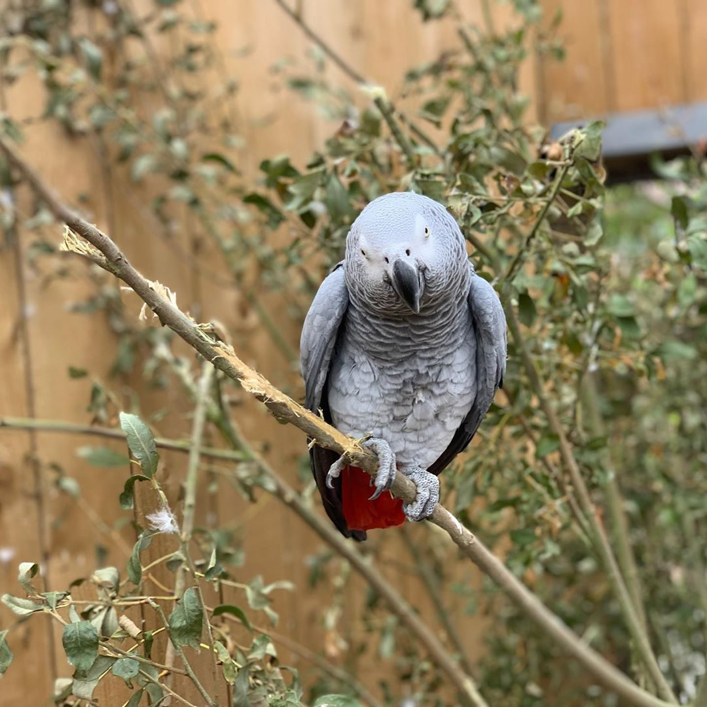
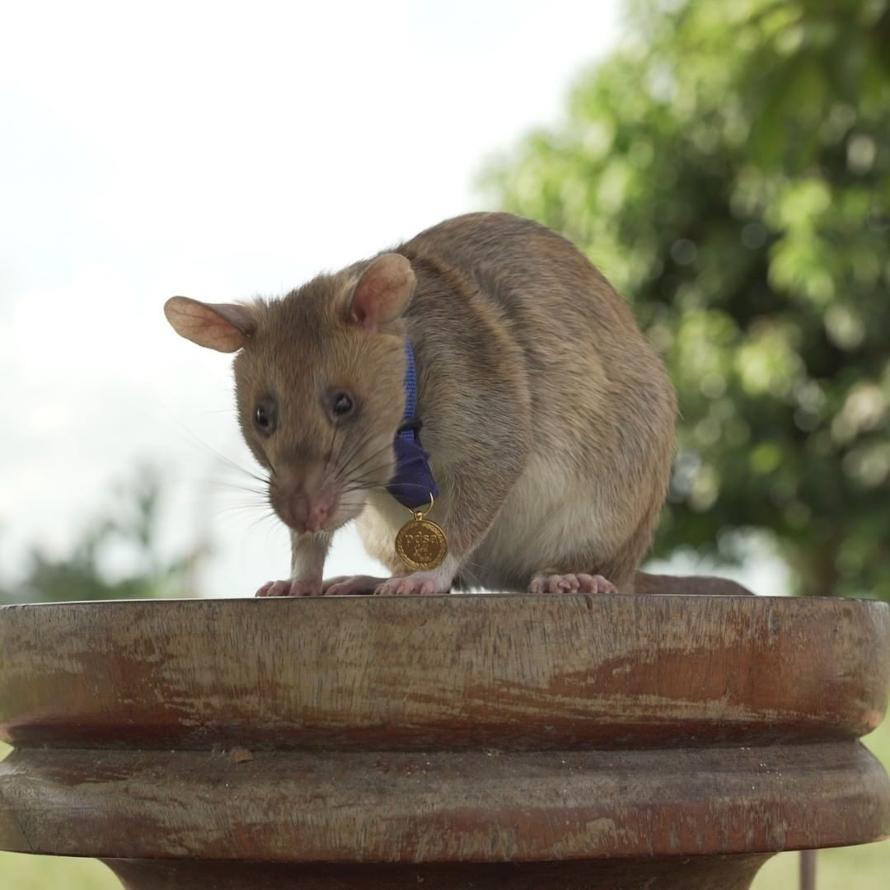
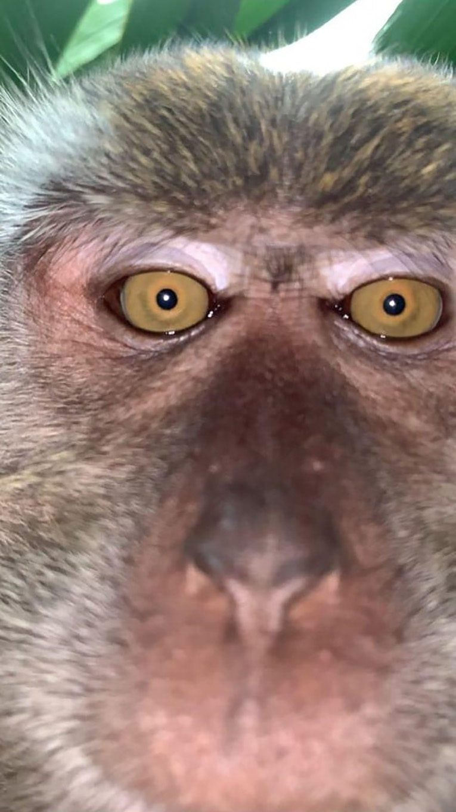

The viral Cat God

VIA CLOUDCAT28/TWITTER.COM
Clyde, a fluffy white kitty, went viral on Twitter when his owner, Amanda Hyslop, posted a photo she’d taken of him. By chance, she’d managed to catch his reflection perfectly in the window while photographing clouds, making it appear that the cloud-like cat had ascended to his rightful throne in the sky...
Toxic parrots are a huge problem
VIA LINCSWILDLIFEPARK/INSTAGRAM.COM
Five African grey parrots—Billy, Eric, Tyson, Jade, and Elsie—recently had to be separated for “encouraging each other to swear” at patrons at the Lincolnshire Wildlife Center in the U.K. “We are quite used to parrots swearing, but we’ve never had five at the same time, and for some reason these five relish it,” Steve Nichols, the zoo’s chief executive, told the AP.
Magawa is a honorable rat
VIA TEAMPDSA/INSTAGRAM.COM
When British charity PDSA announced the winner of the Gold Medal, its top civilian award, people were surprised—mostly because the winner wasn’t a person at all, but a giant African pouched rat. Magawa was awarded the high honor for his diligent work searching out unexploded land mines in Cambodia.
Burgler monkey took selfies
VIA ZACKRYDZ RODZI/FACEBOOK.COM
A Malaysian man says he found monkey selfies and videos on his missing phone a day after retrieving it in the jungle behind his house. The content - including footage of a monkey that appears to be trying to eat the phone - has been widely shared on social media since Zackrydz Rodzi posted it on Twitter.